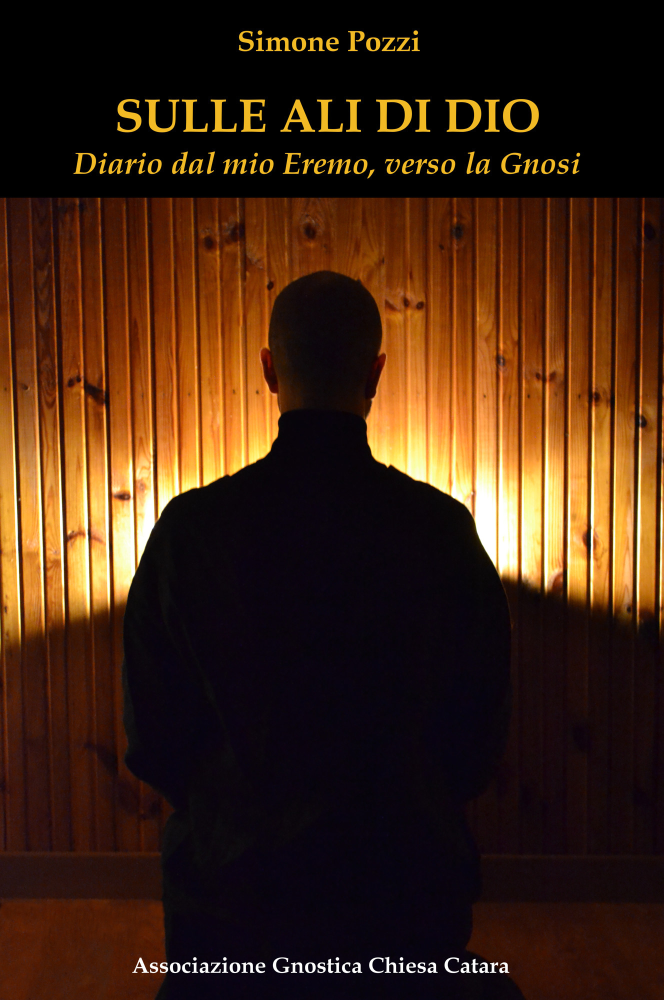
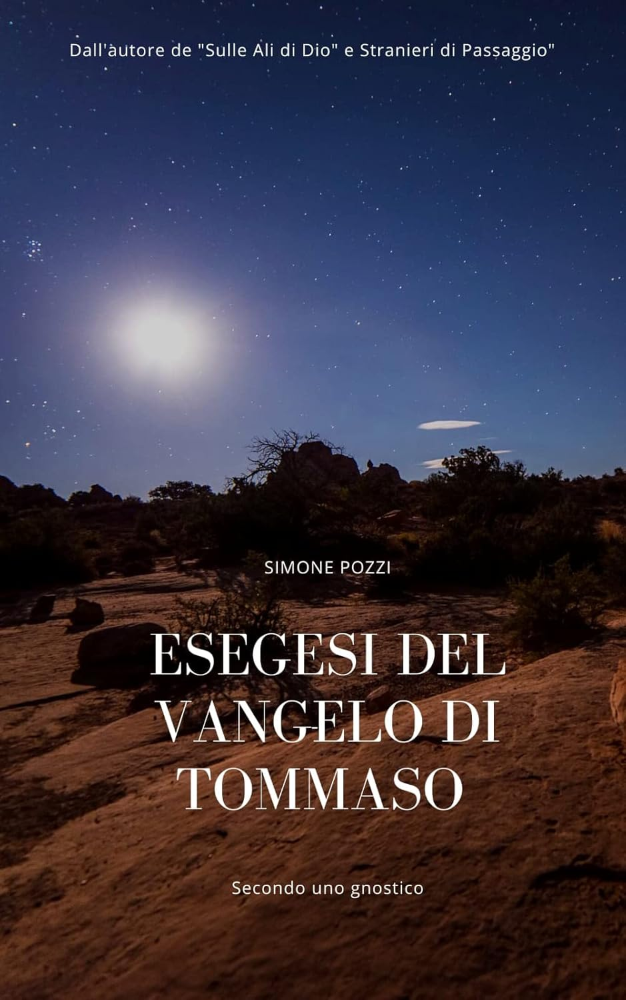

MEDITAZIONE E GNOSI
Mes livres
Pour celles et ceux qui souhaitent approfondir ces thèmes
Trois ouvrages nés à différentes étapes de mon cheminement, avant et après ma rencontre avec la Gnose. Je ne cherche pas à transformer rétrospectivement chaque expérience en doctrine : le fil que j’y reconnais aujourd’hui est la question de notre origine, de l’étrangeté de l’Esprit à ce monde et de la possibilité d’une libération de la matière.
01

Sulle Ali di Dio
Journal de mon ermitage, vers la Gnose
Silence, paix, connaissance. Après une recherche intense, commencée dès l’enfance et souvent marquée par la désillusion, j’ai quitté mon travail à vingt-sept ans pour vivre dans un ermitage. Cette décision a fait naître une étincelle qui m’a conduit à vivre des expériences spirituelles profondes et variées.
02

Stranieri di passaggio
Voyage vers la libération
Un voyage intérieur né en 2007, avant ma rencontre avec la Gnose, mais déjà traversé par l’intuition que ce monde n’est pas notre véritable demeure. Un roman symbolique sur le chemin humain, le pont et la recherche de la liberté. Le livre n’est plus distribué en librairie. Pour demander un exemplaire, vous pouvez me contacter à l’aide du formulaire.
03

Esegesi del Vangelo di Tommaso secondo uno gnostico
Une lecture à vivre
Je ne suis pas historien, ni amoureux de la culture humaine. Mais j’aime la liberté, et cet Évangile en déborde. J’essaie de vous la transmettre, non comme un universitaire, mais comme un gnostique. Ce livre n’est pas destiné à rester sur une étagère : il est fait pour être vécu. J’ai écrit l’essentiel ; le reste vous appartient.
Pour toute information, écrivez-moi via le formulaire de contact.